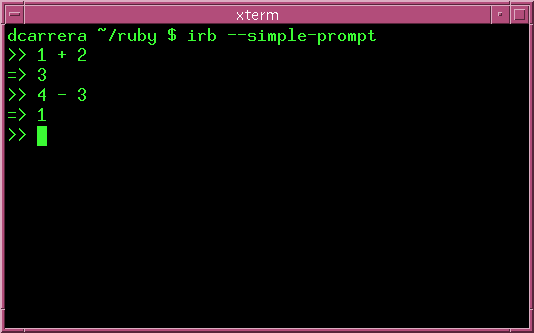
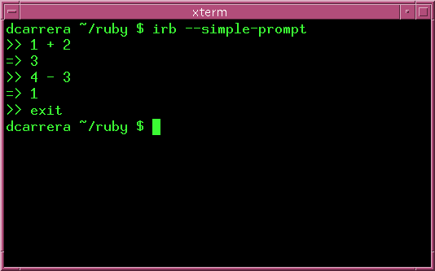
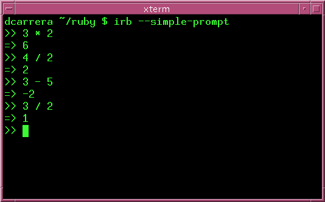
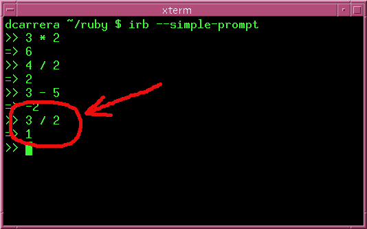
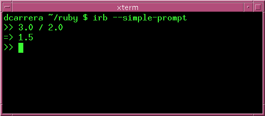
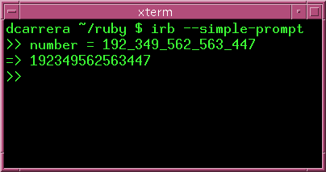
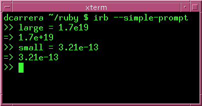

We begin our exploration of Ruby with the interactive Ruby shell
(irb). Open up a terminal and type:
irb --simple-prompt.
Make sure that you can get irb working before you move on.
At the simplest level, you can use ruby as a calculator. Try this:
Ruby understands all the basic arithmetic operators that you would expect:
| Symbol | Meaning |
|---|---|
| + | addition |
| - | subtraction |
| * | multiplication |
| / | division |
To get out of irb type exit.
You should play around with these for a bit. Try this:
Notice what happens when you try to divide 3 by 2:
What happened? It turns out that Ruby understands two different classes of numbers:
An integer is a whole number, like 1, 2, -5, etc. When you operate using only integers, Ruby will give you an Integer answer.
3/2 is 1.5, but that is not an integer, so Ruby gives you 1 instead.
A float is a number with decimal places, like 3.14, 1.5, 3.0, etc. When you operate with Floats Ruby gives you a Float answer. For example:
Before we wrap up this chapter, let's look at two more operators:
| Symbol | Meaning |
|---|---|
| ** | Exponent |
| % | Remainder |
Notice how the remainder operator '%' behaves with decimals. In this example, 2 goes twice into 5.1 and there is 1.1 left over.
Ruby is good at dealing with very large and very small numbers. Suppose that you want to store the number 192349562563447.
Well, that's very hard to read. So, in English, you would normally write it as "192,349,562,563,447". Ruby uses something similar, using underscores:
What is you want 17_000_000_000_000_000_000 or 0.000_000_000_000_321? Normally you'd use scientific notation to write 1.7 x 1019 and 3.21 x 10-13. Again, Ruby gives you an alternative:
How many hours are in a year?
How many minutes are in a decade?
How many seconds old are you?
What is 3.24 * ((34/2) - 54)/33.4 * 3.4?
Notice that you can use brackets.
What do you think happens when you combine floats and integers? Try computing these:
Is the answer a float or an integer?